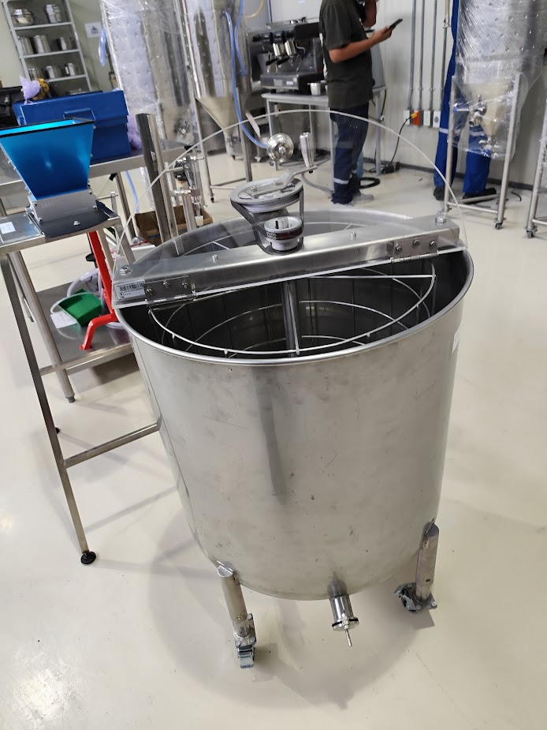

Extractores de Miel
Tecnología eficiente para la cosecha apícola
Extracción Limpia y Rápida
Centrífugas diseñadas para maximizar el rendimiento de la cosecha sin dañar los panales. Su estructura balanceada y motor de velocidad variable permiten un trabajo continuo y silencioso.
Construidos totalmente en acero inoxidable "Food Grade", cumplen con todas las normativas de inocuidad alimentaria exigidas para la exportación de miel.
Especificaciones
- Material: Acero Inoxidable 304
- Capacidad: 4 a 24 marcos (según modelo)
- Motor: Eléctrico con variador de velocidad
- Salida: Válvula de corte tipo guillotina
- Extras: Tapas transparentes de inspección
Galería del Producto

Interior de Canasto